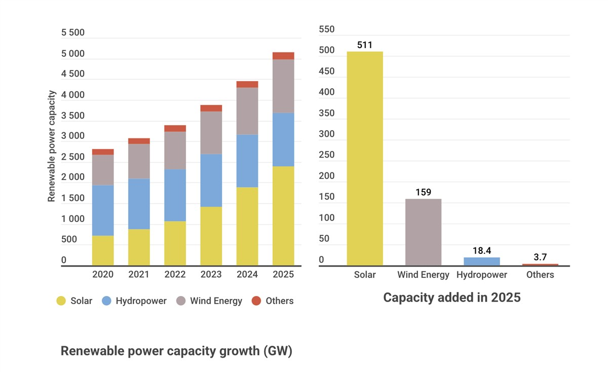

ON SOURCE: EARTH . ORG
Renewables Hit Nearly Half of Global Power Capacity in 2025
by Martina Igini Global Commons Apr 2nd 2026 3 mins
Earth.Org is powered by over 150 contributing writers
“By the end of 2025, renewables accounted for 49% of global installed power capacity, and comprised 85.6% of annual global power additions, largely due to significant growth in solar and wind power,” said Francesco La Camera, Director-General of the International Renewable Energy Agency.
—
Renewable energy accounted for nearly half of global power capacity by the end of 2025, according to new data from the International Renewable Energy Agency (IRENA).
Last year saw the largest-ever recorded increase in renewable energy capacity – a 15.5% annual increase, or 692 gigawatts (GW) of added renewable capacity, the agency said in a report published on Wednesday. This continues a trend that has seen renewable power additions reaching new records almost every year since the turn of the millennium owing to their “competitiveness and resilience,” said Francesco La Camera, IRENA’s Director-General.
Renewables accounted for 49% of installed power capacity globally and comprised 85.6% of the total global power added in 2025. Driving this growth was solar energy, which alone accounted for nearly three-quarters of all renewable additions – a record 510 GW. Wind came in second, with 159 GW added in one year.

But disparities among countries and regions persisted. China continued to lead the renewable energy market, reaching a total cumulative capacity of 2,258,016 MW in 2025 – a 24.2% increase over the previous year and far more than the capacity added cumulatively in each continent. China, the US and the European Union together accounted for 79.5% of the new renewable capacity installed globally.
Meanwhile, Africa’s added capacity amounted to just 1.6% of all global additions despite its capacity rising by a record 15.9%, driven by Ethiopia, South Africa, and Egypt. The Middle East also added a record annual renewable capacity – 28.9% more compared to 2024 – with Saudi Arabia driving the growth.
While renewables now make up nearly half of global capacity, they contribute a smaller share of actual electricity generation – some 32% in 2024. Electricity is only one segment of total global energy, which remains dominated by fossil fuels used in heavy industry and long-haul transport like shipping and aviation.
Renewables Shield Nations From Ongoing Energy Crisis
The report comes amid a deepening global energy crunch sparked by the US-Israeli attacks on Iran in late February and a conflict that has quickly spread across the Middle East. In response to the attacks, Iran blocked traffic in the Strait of Hormuz, one of the world’s busiest oil shipping channels where some 20-25% of global oil supply typically flows, triggering a global energy supply crisis.
But the crisis is not affecting all countries equally. Analysts point out that nations with a robust renewable base are embracing the energy independence it provides and have been mostly insulated from the market shock. Conversely, those tied to fossil fuels, like the US, are pushing for even more investments in oil, gas, and even coal.
“Once you bring the [renewable] technology into the countries, the fuel you’re using is the sun, is the wind, is the heat that is local,” Rana Adib, Executive Secretary of the Renewable Energy Policy Network for the 21st Century, told DW last month. “And this is a reason why renewable energy as a solution for energy production is much more resilient to those global shocks.”
Featured image: Joan Sullivan / Climate Visuals Countdown.
More on the topic: Italy Votes to Delay Shutdown of Coal-Fired Plants By 13 Years As Energy Crunch Deepens Amid Iran War
About the Author
Martina Igini
Martina is a journalist and editor with experience covering climate change, extreme weather, climate policy and litigation. At Earth.Org, she singlehandedly manages over 100 global contributing writers and oversees the publication's editorial calendar. She also curates the news section and multiple newsletters. Since joining the newsroom in 2022, she's successfully grown the monthly audience from 600,000 to more than one million. Before moving to Asia, she worked in Vienna at the United Nations Global Communication Department and in Italy as a local news reporter. She holds two BA degrees - in Translation Studies and Journalism - and an MA in International Development from the University of Vienna.
ON SOURCE: EARTH . ORG